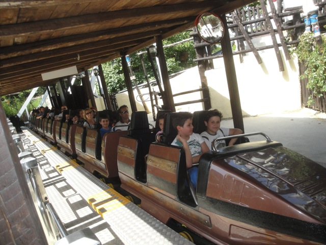
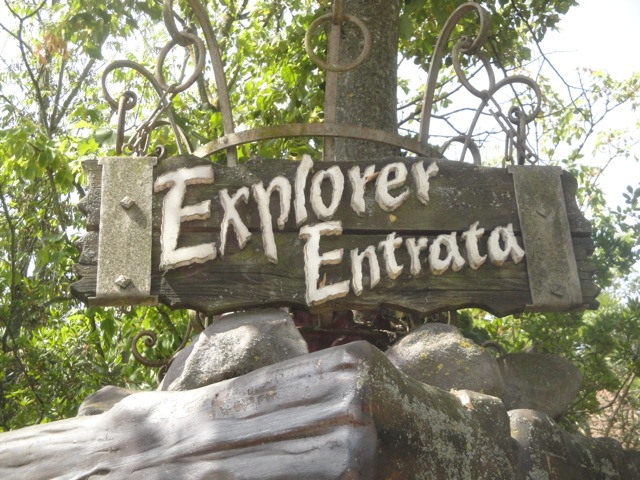

| |
Explorer Review

We're here at Mirabilandia to ride Explorer. You get in the cars and off you go. We head around a curve and start to head up hill. However, as we head up-hill, we begin to accelerate. Now you may think, how can a roller coaster accelerate going upward? (Aside from the extremely rare upward launch) It can't. Explorer is able to do this because it is not a roller coaster, but is instead, a powered coaster, which does not follow the rules of both roller coasters and gravity. We head through a sort of extremely brief rock tunnel before heading through another one as we go upward before heading into a downward helix. Note that gravity as no effect on our speed. Still just cruising along as if elevation and friction don't exist. We then slow down, squeeze between a couple rocks as the track tilts to the right and we head around through a downward helix, accelerating past some nice rock work and underneath a bridge. We head around a curve and roll through the station, going around for a couple more laps, and the cycle starts again. For a powered coaster in Europe, this is actually one of the weaker ones. But if this sounds like your cup of tea, then you'll like it just fine.
5/10
Location: Mirabilandia
Opened: 1992
Built by: Mack
Last Ridden: June 20, 2012
Explorer Photos

Home
|